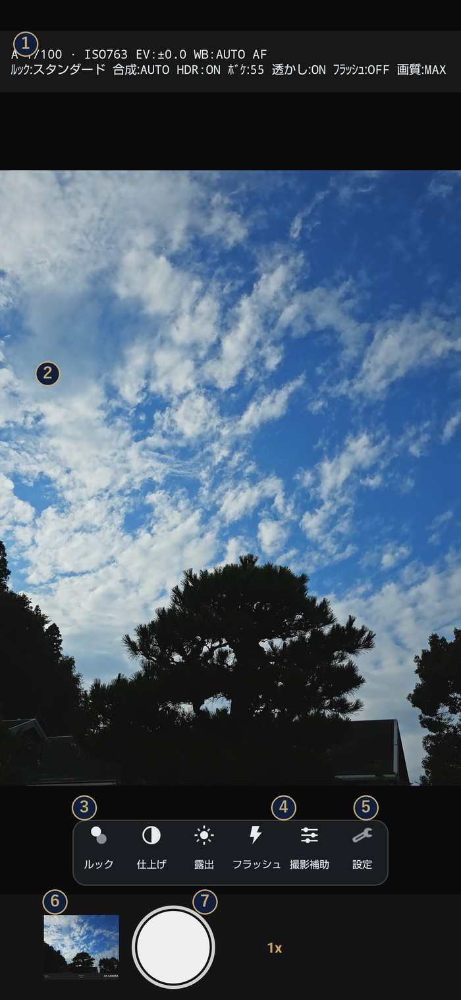

撮影画面の見かた

- 情報帯。1行目は露出モード・シャッター速度・ISO・露出補正・ホワイトバランス。2行目は、いま効いているルック・合成・HDR・ボケ・透かし・フラッシュ・画質です。設定を開かなくても、いまの状態がここで分かります。タップすると露出の設定が開きます。
- プレビュー。仕上がりに近い絵が出ます。ルックやボケを変えると、この場で見た目が変わります。ピントを合わせたいところをタップしてください。
- ルック。色の方向性を選びます（21種類）。
- 撮影補助。合成・HDR・セルフタイマー・構図グリッド・水準器・動画。
- 設定。画質や保存形式など、じっくり決めるものはこちら。
- 直前の1枚。タップすると、撮った写真をアプリの中で見られます。
- シャッター。押すだけ。動画モードのときは赤い丸に変わります。
下の帯には左から ルック / 仕上げ / 露出 / フラッシュ / 撮影補助 / 設定 が並びます（表示モードが「標準」のとき）。 押すとその場で小さな面が開き、値を変えるとすぐプレビューに出ます。 シャッターの右にある「1x」はレンズの切り替えです。
表示モードを「かんたん」にすると、ボタンは ルック / フラッシュ / 撮影補助 / 設定 の4つだけになります。
「プロ」にすると フォーカス が増え、シャッター速度や ISO を自分で決められます。くわしくは 06 へ。